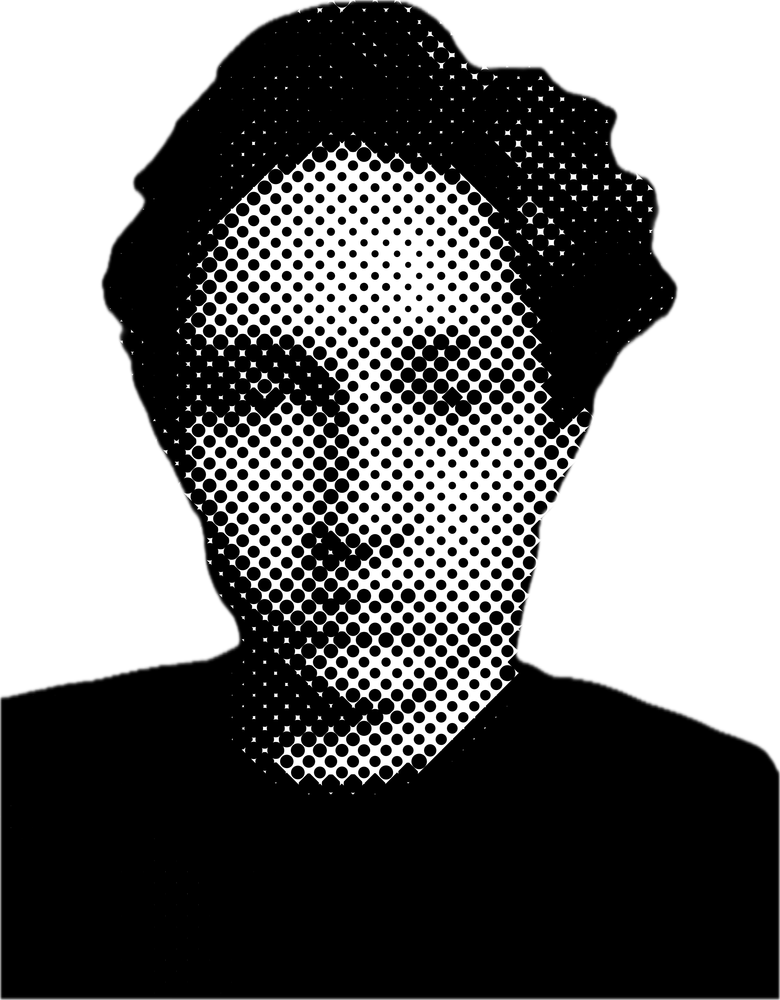

Who am I
My name is Floris Terpstra.
I am interested in the culture, history and visual language of electronic music. To me, electronic music is a shared language.
It connects technology, history, design and people on the dancefloor. Its influence can be heard far beyond club music: in pop, hip-hop, film, games and the sounds we hear every day.
This website explores where that language came from, and how it continues to shape the music of today.
